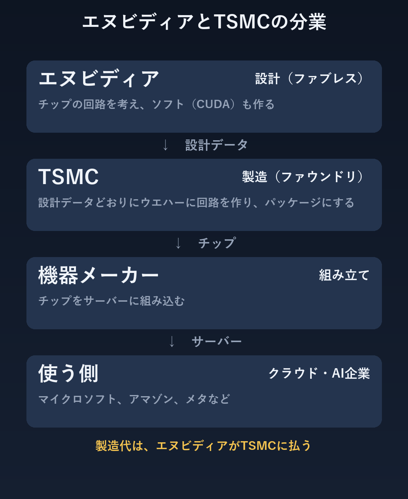

半導体の特集｜第2回
エヌビディアはなぜ自社の工場を持たないのか？
エヌビディアはAI向けの半導体の最大手ですが、チップを作る自社の工場は持っていません。作っているのは台湾のTSMCです。なぜ工場を持たないのか。「お金」「集中」「難しさ」の3つの理由と、その弱点を見ていきます。

そもそも「ファブレス」とは
工場のことを半導体の世界では「ファブ」と呼びます。ファブを持たず、設計だけをする会社を「ファブレス」といいます。エヌビディアは1993年の創業のときからファブレスです。
設計したデータはTSMCに渡し、TSMCがウエハーの上に回路を作り、パッケージにして、エヌビディアの製品として出荷されます。第1回の全体図でいうと、レイヤー1（設計）がエヌビディア、レイヤー4（前工程）がTSMCです。
理由1：最先端の工場は、とても高い
最先端の工場は1つ建てるだけで巨額のお金がかかります。調査会社IBSは2023年に、2ナノの工場は1つ約280億ドル、3ナノの工場は約200億ドルかかると見込みました。
TSMCは2026年の設備投資（工場や装置に使うお金）を600億〜640億ドルと見込んでいます。2025年は409億ドルでした。これに対して、エヌビディアの研究開発費は2026年1月期で約185億ドルです。もし自分で工場を持てば、研究開発費をこえる額を、毎年工場に入れ続けることになります。
理由2：設計とソフトに集中できる
工場を持たない分、お金と人を、新しいチップの設計と、チップを使うためのソフト（CUDA）に回せます。エヌビディアは新しい世代のGPUを、ほぼ毎年のように出しています。
工場を持つ会社は、建物や装置の費用（減価償却）を毎年計上します。持たない会社はその分がかからないため、利益率が高くなりやすい形です。エヌビディアの売上総利益率は2026年1月期で71.1%、TSMCは2025年で59.9%でした（事業の中身がちがうので、目安としての比較です）。
理由3：最先端の工場を動かし続けるのは難しい
最先端の製造は、お金だけでなく、長い年月をかけた技術の積み重ねが必要です。設計も製造も自社でするインテルは、製造部門（インテル・ファウンドリー）が2025年に売上約178億ドルに対して、約103億ドルの営業赤字だったと報じられています。
一方、製造だけを受けるTSMCには世界中の注文が集まり、受託製造の市場で72.5%のシェアがあります（2026年4〜6月、TrendForce）。2位のサムスン電子は5.9%です。注文が集まるほど、工場を作るお金と経験がたまる仕組みです。
始まりは、1通の手紙
1990年代の後半、ジェンスン・フアンCEOはチップを作ってくれる工場を探していました。TSMCの米国の事務所に何度電話しても、折り返しはなかったそうです。そこで創業者のモリス・チャン氏に長い手紙を書くと、ある晩、本人から電話があり、取引が始まりました。フアン氏は最近のポッドキャストで、TSMCは30年にわたって助けてくれていると話しています。
3社をくらべると
| 会社 | やること | 売上 | 利益の目安 |
|---|---|---|---|
| エヌビディア | 設計（ファブレス） | 2,159億ドル（2026年1月期） | 売上総利益率 71.1% |
| TSMC | 製造（ファウンドリ） | 1,224億ドル（2025年） | 売上総利益率 59.9% |
| インテル | 設計も製造も（IDM） | 製造部門 約178億ドル（2025年） | 製造部門は約103億ドルの営業赤字（報道） |
決算期と事業の中身がちがうため、目安としての比較です。インテルは製造部門の数字です。
弱点：作れる量はTSMC次第
- 作れる量の上限：最先端のチップも、AI向けの高度なパッケージ（CoWoS）も、TSMCの工場の空き次第です。需要が急に増えても、すぐには増やせません。
- 場所が集中：最先端の製造の多くは台湾にあります。地震や地政学の緊張が起きると、影響を受けやすくなります。
- 製造代：TSMCが値上げすると、エヌビディアのコストが上がります。
- 最近の動き：TSMCは米国アリゾナ州にも工場を作っています。エヌビディアは2025年12月にインテルへの50億ドルの出資を終えました。ただし、インテルにGPUの製造を任せるかどうかは決まっていません。
次回（第3回）は「TSMC・サムスン・インテルの製造の競争」の予定です。
出典
- NVIDIA：2026年1月期（第4四半期・通期）の決算発表
- TSMC の2025年の売上・利益率・設備投資（Telecom Lead）
- TSMC、2026年の設備投資を最大640億ドルに（Bits&Chips）
- 2ナノの工場は約280億ドルの見込み（IBS／Tom's Hardware）
- TSMC の受託製造シェア 72.5%（TrendForce／Tribune India）
- インテル 2025年の決算（製造部門の数字）（Panabee）
- エヌビディア、インテルへの50億ドルの出資を終える（eeNews Europe）
- フアン氏、1990年代にTSMCと組んだときの話（KuCoin News／Business Insider）